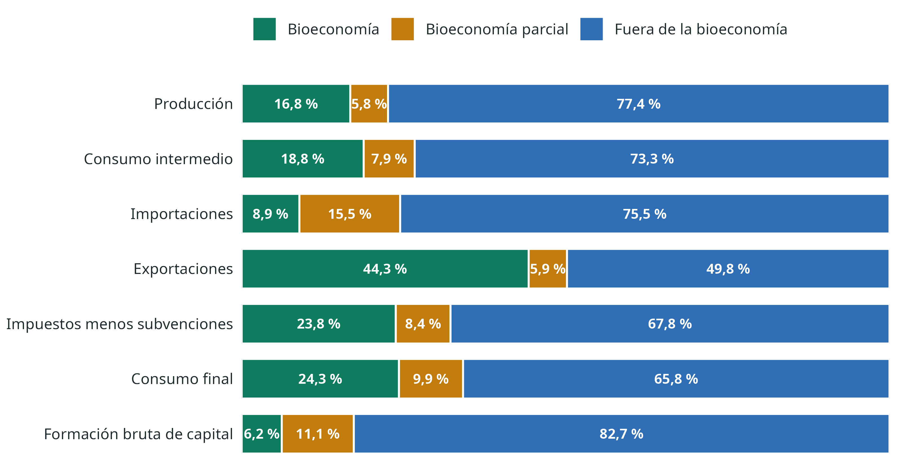
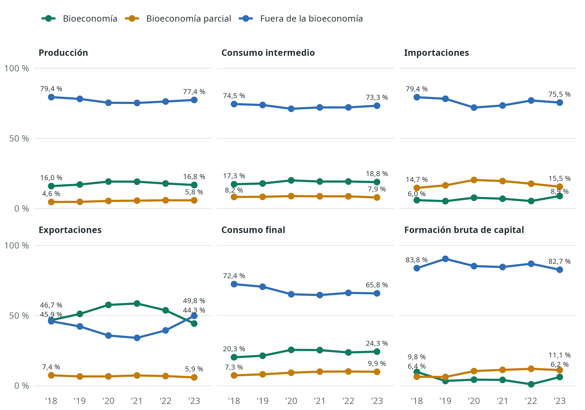
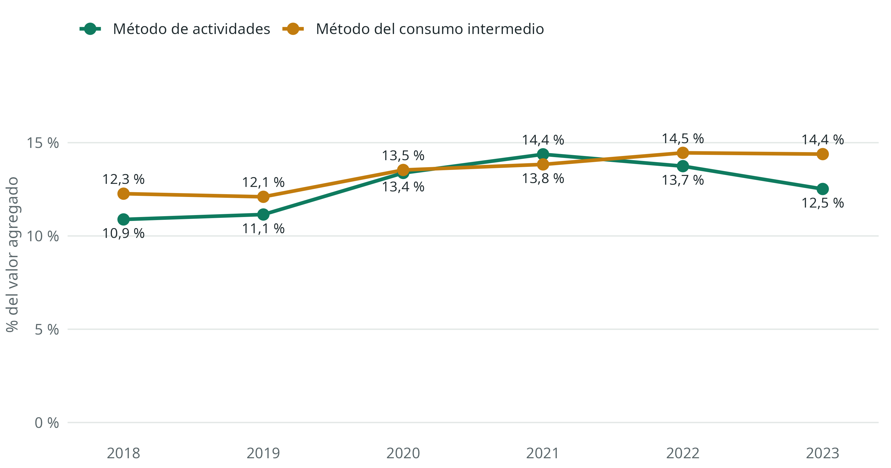
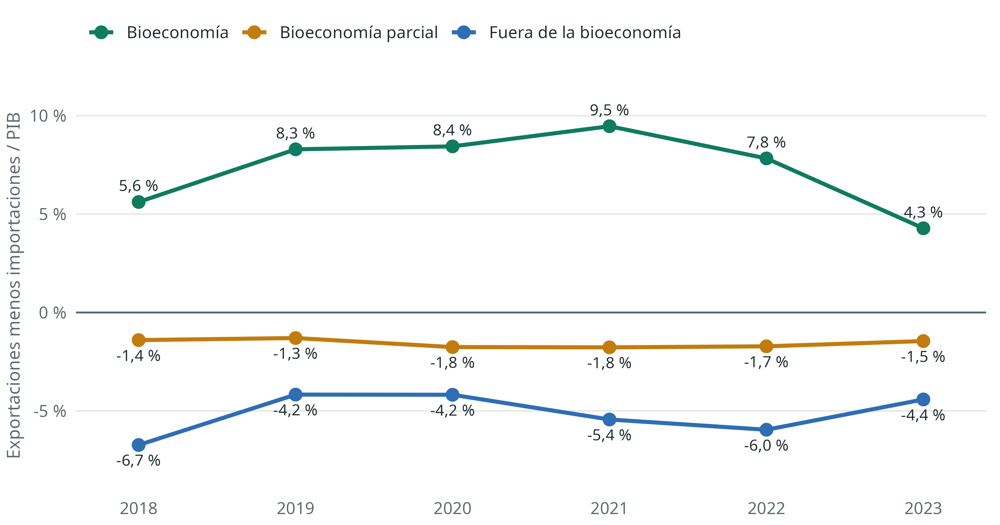
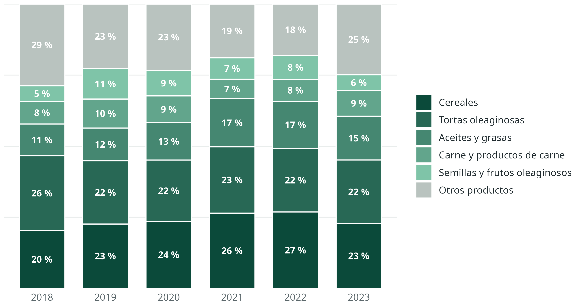
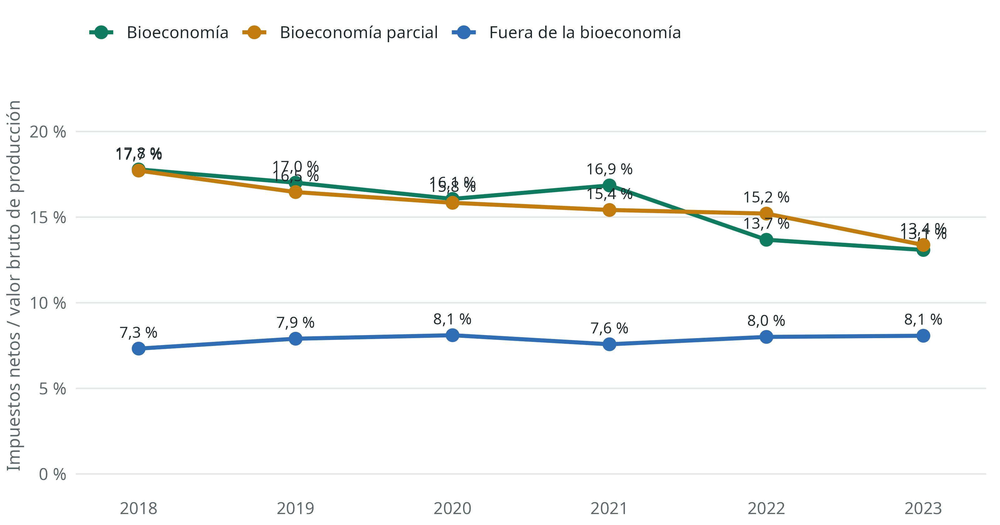

La bioeconomía en las cuentas nacionales de Argentina
Una lectura para la política pública a partir de los cuadros de oferta y utilización de 2018 a 2023
Resumen
Esta nota retoma la metodología de las cuentas de bioeconomía desarrollada para Costa Rica y trece países de América Latina y el Caribe, la alinea con el tratamiento de las cuentas temáticas del SCN 2025 y la aplica a los cuadros de oferta y utilización de Argentina de 2018 a 2023. En 2023, los productos bioeconómicos representaron alrededor de un sexto de la producción, pero 44 % de las exportaciones (más de la mitad entre 2019 y 2022, antes de la sequía) y casi una cuarta parte de los impuestos netos sobre los productos. Generan un superávit comercial amplio y concentrado en pocos productos, y en todos los años tributan a una tasa implícita mayor que la del resto de la economía. La nota revisa estos resultados, sus límites y seis cursos de política pública que se pueden discutir a partir de ellos.
1 Por qué medir la bioeconomía
La bioeconomía abarca “la producción, utilización, conservación y regeneración de recursos biológicos, incluyendo los conocimientos, la ciencia, la tecnología y la innovación relacionados con dichos recursos”, para proporcionar productos y servicios a todos los sectores, con el propósito de avanzar hacia una economía sostenible e inclusiva (Comisión Económica para América Latina y el Caribe, 2022). Esta caracterización deriva de las cumbres mundiales de bioeconomía (International Advisory Council on Global Bioeconomy, 2020) y es la misma que adoptó Costa Rica en su estrategia nacional (Gobierno de Costa Rica, 2020).
Una estrategia necesita una medida. Las cuentas nacionales no muestran la bioeconomía como un sector, porque sus clasificaciones se organizaron con otros fines. Sus elementos aparecen repartidos en agricultura, alimentos, químicos, textiles, comercio y muchos servicios. Una cuenta temática, como el SCN 2025 llama a las antiguas cuentas satélite (Comisión Europea et al., 2025), reordena esa información sin alterar los saldos contables, de manera que el resultado sigue siendo comparable con el PIB y con el resto de las estadísticas macroeconómicas.
Esta nota se dirige a personas que analizan o diseñan políticas públicas. Resume el método con poco detalle técnico, presenta los resultados de Argentina y propone preguntas de política. El método completo y la comparación regional están en Vargas et al. (2022) y Vargas et al. (2023).
2 Cómo se construye la cuenta
2.1 Tres categorías para productos y actividades
La cuenta parte de los cuadros de oferta y utilización (COU), que muestran para cada producto cuánto se dispone y en qué se usa, y para cada actividad qué produce y qué insumos consume (Comisión Europea et al., 2008). Clasifica productos y actividades en tres categorías. El contenido viene de Vargas et al. (2022) y Vargas et al. (2023); los nombres siguen el SCN 2025, que organiza una cuenta temática alrededor de una actividad clave con una frontera precisa (Comisión Europea et al., 2025, párr. 38.21 y 38.29):
- Bioeconomía. Dentro de la frontera: productos cuyo origen está en recursos biológicos, y actividades cuya producción principal son esos productos. En Vargas et al. (2022) eran los productos y actividades característicos.
- Bioeconomía parcial. Parcialmente dentro de la frontera: productos y actividades que combinan contenido biológico y no biológico que el COU no permite separar. El SCN 2025 pide desagregar las filas y columnas que cruzan la frontera (Comisión Europea et al., 2025, párr. 38.32). Con el detalle del COU de INDEC no es posible, por eso quedan como categoría propia. En Vargas et al. (2022) eran los de características extendidas.
- Fuera de la bioeconomía. Todos los demás. En Vargas et al. (2022) eran los no característicos.
El anexo lista la condición de cada producto y actividad.
Como un producto puede salir de varias actividades y una actividad puede producir varios productos, la cuenta clasifica ambas dimensiones por separado. Ese es el aporte principal del método: permite ver los productos bioeconómicos que fabrica una actividad fuera de la bioeconomía y los insumos biológicos que esta compra. El SCN 2025 prevé esta posibilidad: una cuenta temática puede incluir la producción secundaria de industrias cuya producción principal está fuera de la frontera (Comisión Europea et al., 2025, párr. 38.24).
2.2 Del cuadro a la base de datos
Los COU se publican como matrices. Para analizarlos, cada celda distinta de cero se convierte en una fila de una tabla con sus atributos: cuadro, producto, actividad, condición bioeconómica y valor. Después, cualquier cuadro se reconstruye con una tabla dinámica, y los totales siguen coincidiendo con los oficiales.
Para Argentina se usaron los COU de INDEC de 2018 a 2023 (Instituto Nacional de Estadística y Censos, s.f.), con la clasificación de productos y actividades elaborada para Vargas et al. (2023). Todos los años quedan en una sola base, en millones de pesos corrientes. La rutina asigna filas y columnas por su código, porque la nomenclatura de INDEC cambió entre años, y cada código tiene una sola clasificación válida para todo el periodo. Controlamos tres cosas: que la oferta y la utilización sean iguales para cada producto y año, que cada fila sume el total publicado por INDEC, y que, con la clasificación original, la base de 2018 coincida celda por celda con la de Vargas et al. (2023), que da 46,7 % de las exportaciones y 17,8 % de tasa implícita.
Esta actualización corrige un error de esa clasificación. La actividad 050 Pesca estaba en la sección B y clasificada como no bioeconómica. Esa letra corresponde a la pesca en la CIIU Rev. 3 que usa INDEC, pero a minas y canteras en la Rev. 4 que usa la cuenta. Ahora Pesca está en la sección A y es bioeconómica, como el pescado que produce. La corrección eleva el valor agregado bioeconómico de 2018 de 10,9 % a 11,3 % por el método de actividades, y de 12,3 % a 12,4 % por el del consumo intermedio.
La base, la clasificación y todos los indicadores de esta nota se pueden explorar en la herramienta de bioeconomía, que también permite reclasificar productos y actividades y comparar el resultado con la clasificación original.
2.3 Dos maneras de medir el valor agregado
El valor agregado existe por actividad y no por producto. El cálculo tradicional clasifica de antemano las actividades y suma el valor agregado de las bioeconómicas. El problema es que trata la condición bioeconómica como un atributo fijo, cuando en realidad cada actividad usa una mezcla de insumos. Por eso Vargas et al. (2023) proponen una segunda medida, que asigna a cada sección de actividad el valor agregado en proporción a sus insumos bioeconómicos.
2.4 Multiplicadores de uso
Para captar los encadenamientos, estimamos cuántos insumos de bioeconomía y de bioeconomía parcial usa directa e indirectamente cada actividad por cada peso que entrega a la demanda final. El cálculo parte de los mismos COU, con el supuesto de tecnología de la industria, y agrupa las actividades según su distancia a la mediana, medida en desviaciones absolutas medianas (DAM). Es un ejercicio didáctico: los cuadros están a precios de comprador y no separan los insumos nacionales de los importados, de modo que los niveles están sobrestimados. Sirve para ordenar actividades; predecir impactos requiere otro modelo.
3 Resultados para Argentina
3.1 El panorama general
En 2023, los productos bioeconómicos representaron 16,8 % de la producción, 18,8 % del consumo intermedio, 24,3 % del consumo final y 44,3 % de las exportaciones (Gráfico 1). En importaciones (8,9 %) y en formación bruta de capital (6,2 %) su participación es mucho menor. En comparación con el promedio de los trece países en Vargas et al. (2023), Argentina destaca sobre todo en exportaciones y en impuestos.
Estas participaciones se movieron en el periodo (Gráfico 2). La de las exportaciones subió de 46,7 % en 2018 a 58,6 % en 2021 y bajó a 44,3 % en 2023, el año de la sequía. La de la producción siguió un camino parecido, más suave.

El Cuadro 1 y el Cuadro 2 presentan los cuadros completos. Permiten ver, por ejemplo, cuántos productos bioeconómicos producen las actividades fuera de la bioeconomía y cuántos insumos bioeconómicos compran.
| Bioeconomía | Bioeconomía parcial | Fuera de la bioeconomía | Importaciones | Ajuste CIF/FOB | Impuestos menos subvenciones | Márgenes de distribución | Total | |||||
|---|---|---|---|---|---|---|---|---|---|---|---|---|
| Sector primario |
Manu- facturas |
Manu- facturas |
Servicios | Sector primario |
Manu- facturas |
Servicios | ||||||
| Bioeconomía | 22.538 | 31.317 | 313 | 15 | 22 | 87 | 2.434 | 7.103 | 17.876 | 81.705 | ||
| Productos agrícolas | 21.583 | 804 | 33 | 16 | 1.873 | 915 | 4.381 | 29.605 | ||||
| Manufacturas | 30.513 | 263 | 15 | 22 | 71 | 562 | 6.184 | 13.495 | 51.125 | |||
| Otros servicios | 955 | 18 | 3 | 976 | ||||||||
| Bioeconomía parcial | 215 | 12.409 | 800 | 5.439 | 4.247 | 2.523 | 8.215 | 33.846 | ||||
| Manufacturas | 215 | 12.389 | 5.439 | 4.183 | 2.519 | 8.214 | 32.960 | |||||
| Servicios básicos | 103 | 103 | ||||||||||
| Otros servicios | 19 | 697 | 64 | 3 | 783 | |||||||
| Fuera de la bioeconomía | 210 | 1.490 | 1.627 | 11.451 | 12.728 | 46.099 | 177.066 | 20.631 | -1.126 | 20.233 | -26.091 | 264.320 |
| Productos mineros | 21 | 9.199 | 69 | 1.044 | -299 | 1.507 | 11.540 | |||||
| Manufacturas | 208 | 701 | 2 | 42.035 | 483 | 13.257 | 5.636 | 16.070 | 78.392 | |||
| Servicios básicos | 350 | 2 | 5.811 | 237 | 478 | 6.877 | ||||||
| Construcción | 210 | 17 | 55 | 1.420 | 445 | 16.859 | 21 | 1.301 | 20.327 | |||
| Comercio | 525 | 193 | 106 | 1 | 1.501 | 38.765 | -6 | -38.499 | 2.586 | |||
| Otros servicios | 720 | 677 | 10.994 | 2.106 | 2.050 | 115.149 | 6.073 | -1.126 | 13.124 | -5.169 | 144.598 | |
| Ajuste CIF/FOB | -1.126 | 1.126 | ||||||||||
| Compras directas | 333 | 333 | ||||||||||
| Oferta total | 22.748 | 33.021 | 14.349 | 12.266 | 12.728 | 51.560 | 177.154 | 26.520 | 29.859 | 380.204 | ||
| Bioeconomía | Bioeconomía parcial | Fuera de la bioeconomía | Exportaciones | Consumo final | Formación bruta de capital | Total | |||||
|---|---|---|---|---|---|---|---|---|---|---|---|
| Sector primario |
Manu- facturas |
Manu- facturas |
Servicios | Sector primario |
Manu- facturas |
Servicios | |||||
| Bioeconomía | 5.235 | 17.707 | 761 | 4.521 | 276 | 1.587 | 10.734 | 38.599 | 2.284 | 81.705 | |
| Productos agrícolas | 3.163 | 13.160 | 257 | 1.431 | 33 | 208 | 3.865 | 5.440 | 2.047 | 29.605 | |
| Manufacturas | 1.106 | 4.544 | 502 | 3.090 | 243 | 1.378 | 6.865 | 33.158 | 237 | 51.125 | |
| Otros servicios | 966 | 3 | 2 | 5 | 976 | ||||||
| Bioeconomía parcial | 2.390 | 664 | 2.978 | 257 | 174 | 2.915 | 3.197 | 1.433 | 15.731 | 4.104 | 33.846 |
| Manufacturas | 2.390 | 655 | 2.971 | 256 | 132 | 2.905 | 3.073 | 1.218 | 15.327 | 4.032 | 32.960 |
| Servicios básicos | 9 | 8 | 1 | 3 | 10 | 72 | 103 | ||||
| Otros servicios | 40 | 52 | 215 | 404 | 72 | 783 | |||||
| Fuera de la bioeconomía | 3.796 | 4.988 | 5.055 | 2.443 | 5.752 | 31.720 | 63.317 | 12.064 | 104.665 | 30.517 | 264.320 |
| Productos mineros | 185 | 235 | 14 | 187 | 5.337 | 2.783 | 2.408 | 374 | 19 | 11.540 | |
| Manufacturas | 1.033 | 1.825 | 2.462 | 855 | 1.712 | 20.240 | 15.963 | 5.374 | 17.315 | 11.614 | 78.392 |
| Servicios básicos | 19 | 357 | 144 | 152 | 205 | 565 | 3.411 | 1 | 2.022 | 6.877 | |
| Construcción | 9 | 45 | 26 | 3 | 1.361 | 12 | 18.871 | 20.327 | |||
| Comercio | 906 | 103 | 98 | 1 | 1 | 675 | 804 | 2.586 | |||
| Otros servicios | 1.829 | 2.519 | 2.116 | 1.377 | 3.623 | 4.901 | 38.996 | 4.269 | 84.955 | 14 | 144.598 |
| Compras directas | 333 | 333 | |||||||||
| Utilización total | 11.422 | 23.359 | 8.795 | 7.222 | 5.926 | 34.912 | 68.102 | 24.565 | 158.995 | 36.905 | 380.204 |
| Valor agregado bruto | 11.326 | 9.662 | 5.554 | 5.044 | 6.801 | 16.648 | 109.052 | 164.087 | |||
3.2 Valor agregado
Las actividades bioeconómicas generaron 12,8 % del valor agregado bruto de 164.087 miles de millones de pesos, y las de bioeconomía parcial 6,5 %. Por el método del consumo intermedio, la bioeconomía aporta 14,5 %. En 4 de los 6 años, el segundo método da más que el primero; se invierte en 2020 y 2021 (Gráfico 3). Una explicación posible es que en esos años los precios agrícolas elevaron el valor agregado primario, pero el COU a precios corrientes no permite separar ese efecto. En 2023, el método de actividades bajó a 12,8 % desde 14,1 % el año anterior, mientras que el del consumo intermedio se mantuvo en 14,5 %: la sequía golpeó la producción primaria, pero cambió menos la mezcla de insumos de las demás actividades.

3.3 Comercio exterior: superávit y concentración
Los productos bioeconómicos generaron un saldo comercial de 8.300 miles de millones de pesos en 2023, equivalente a 4,3 % del PIB. Los de bioeconomía parcial registraron un déficit de 2.814 y los productos fuera de la bioeconomía, uno de 8.567. Cinco productos concentran 75,1 % de las exportaciones bioeconómicas (Cuadro 3). Medido en proporción del PIB, el superávit bioeconómico llegó a 9,5 % en 2021 y se redujo a 4,3 % en 2023 (Gráfico 4). En estos cambios influyen tanto las cosechas como los precios internacionales y el tipo de cambio. La composición de las exportaciones, en cambio, es estable: cereales, tortas y aceites oleaginosos, carne y semillas oleaginosas explican la mayor parte en todos los años (Gráfico 5).


| Producto | Exportaciones | % de exportaciones bioeconómicas | Producción | Tasa implícita |
|---|---|---|---|---|
| Cereales | 2.440 | 22,7 % | 5.185 | 7,4 % |
| Tortas oleaginosas y borras de algodón | 2.402 | 22,4 % | 2.623 | 11,6 % |
| Aceites y grasas animales y vegetales | 1.656 | 15,4 % | 4.286 | 13,1 % |
| Carne y productos de carne | 971 | 9,0 % | 5.938 | 15,5 % |
| Semillas y frutos oleaginosos | 591 | 5,5 % | 4.245 | -4,5 % |
| Otros productos lácteos | 370 | 3,5 % | 1.626 | 24,1 % |
| Pescado, vivo, fresco o refrigerado | 359 | 3,3 % | 666 | 3,7 % |
| Vinos | 208 | 1,9 % | 520 | 17,2 % |
3.4 Impuestos sobre los productos
La tasa implícita sobre los productos bioeconómicos fue de 13,1 % en 2023, frente a 8,1 % en los productos fuera de la bioeconomía (Gráfico 6). Vargas et al. (2023) ya habían señalado que Argentina tenía la tasa más alta de los trece países. Esta tasa es el resultado neto de todos los instrumentos, creados con fines distintos y en épocas distintas, al margen de una política deliberada hacia la bioeconomía.
Conviene abrirla. Tabaco, bebidas alcohólicas, cerveza y bebidas no alcohólicas aportan 25,9 % de lo recaudado en productos bioeconómicos, y responden a objetivos propios. Sin ellos, la tasa baja a 10,4 %, que sigue siendo mayor que la del resto. También se observan tasas altas en productos muy exportados, como aceites y tortas oleaginosas. Una hipótesis razonable es que ahí pesan los derechos de exportación, pero el COU no separa instrumentos y esto debe verificarse con datos fiscales.

3.5 Encadenamientos
La dependencia de insumos bioeconómicos es muy alta en 32 actividades, y no todas son del sector primario. Destacan carne, alimentos para animales, lácteos, cueros, aceites y restaurantes. Las actividades por encima de la mediana más una DAM generan 22,2 % del valor agregado (Cuadro 4). El multiplicador de demanda promedio de las actividades bioeconómicas (2,48) supera al de las actividades fuera de la bioeconomía (2,03), un resultado que coincide en dirección con el de Costa Rica (Vargas et al., 2022), aunque aquí los niveles están sobrestimados por no separar las importaciones.
| Actividad | Sección | Multiplicador | VA (miles de millones) |
|---|---|---|---|
| Producción, procesamiento y conservación de carne y product... | C | 1,33 | 1.165 |
| Elaboración de alimentos preparados para animales | C | 1,23 | 497 |
| Elaboración de productos lácteos | C | 1,21 | 576 |
| Curtido y terminación de cueros | C | 1,10 | 43 |
| Elaboración de aceites y grasas de origen vegetal | C | 1,09 | 2.096 |
| Restaurantes, bares y cantinas | H - S | 0,91 | 3.382 |
| Elaboración de productos de molinería | C | 0,91 | 489 |
| Hilatura, tejedura y acabado de productos textiles | C | 0,89 | 528 |
| Elaboración de azúcar | C | 0,87 | 284 |
| Preparación de frutas, hortalizas y legumbres | C | 0,84 | 197 |
| Tostado, torrado y molienda de café | C | 0,82 | 634 |
| Elaboración de cacao y chocolate y de productos de confitería | C | 0,80 | 184 |
3.6 Insumos clave
Las importaciones de la bioeconomía parcial superan a sus exportaciones, y algunos de sus insumos dependen de forma importante del exterior. En abonos y plaguicidas, las importaciones equivalen a 28,4 % de la oferta a precios básicos. Este resultado merece una lectura cuidadosa, porque la categoría agrupa productos de distinto origen. Aun así, señala una exposición relevante para el sector agrícola, cuyo consumo intermedio contiene 45,8 % de productos bioeconómicos.
4 Implicaciones para la política pública
Los datos describen una estructura; las decisiones dependen además de objetivos y de evidencia sectorial. Las siguientes líneas son preguntas de política que los resultados vuelven más precisas. Cada una debe contrastarse con la normativa vigente y con evidencia que excede a esta nota.
Un marco útil para ordenarlas son los diez principios de alto nivel sobre bioeconomía que acordó el G20 en 2024 (Iniciativa do G20 sobre Bioeconomia, 2024). Son voluntarios, y tres de ellos dialogan directamente con esta cuenta:
- Principio 7: la bioeconomía debe apoyarse en marcos de política robustos y coherentes.
- Principio 8: debe evaluarse con metodologías transparentes, comparables y medibles.
- Principio 5: debe promover el uso eficiente y circular de los recursos biológicos.
La OCDE agrega una advertencia que conviene tener presente en todas las secciones: la bioeconomía “no es intrínsecamente sostenible”, y su expansión puede competir con la producción de alimentos o presionar los suelos si no se acompaña de incentivos a prácticas sostenibles (Diakosavvas y Frezal, 2019).
TipPara explorar
Cada pregunta de esta sección se puede poner a prueba en la herramienta de bioeconomía: reclasificar un producto o una actividad y ver al instante qué pasa con las participaciones, la tasa implícita, el valor agregado y los multiplicadores.
4.1 Coherencia fiscal
La bioeconomía aporta 23,8 % de los impuestos netos sobre los productos, con una tasa implícita de 13,1 %, frente a 8,1 % en el resto. Vargas et al. (2023) concluyen que hace falta profundizar en este tema para crear incentivos que equilibren el desarrollo de la bioeconomía con los objetivos de finanzas públicas.
En el SCN, los derechos de exportación son impuestos sobre los productos, de modo que la tasa implícita los incluye. Argentina fijó en 2026 un cronograma de reducción gradual de los derechos de exportación de la soja: 24 % durante 2026, 21 % hacia fines de 2027 y 15 % desde fines de 2028 (Hoy Día, 2026). Eso ofrece una prueba natural para la cuenta. Si la hipótesis es correcta, la tasa implícita de aceites y tortas oleaginosas debería bajar en los COU de esos años, y con ella la de toda la bioeconomía. El seguimiento requiere desagregar la tasa por instrumento: derechos de exportación, IVA, impuestos internos y subvenciones.
El principio 7 del G20 pide coherencia. Aquí la pregunta concreta es si la carga sobre los productos bioeconómicos responde a una decisión de política o a la suma de instrumentos con fines distintos: recaudación, estabilización de precios internos y salud pública en tabaco y bebidas. Solo con la tasa desagregada tiene sentido simular cambios.
4.2 Diversificación, valor agregado y economía circular
Un superávit concentrado en cinco productos es una fortaleza para las divisas y una exposición a los precios internacionales y al clima: en 2023, con la sequía, el superávit bioeconómico cayó a 4,3 % del PIB. Las opciones incluyen apoyar cadenas con exportaciones todavía pequeñas, cumplir estándares y trazabilidad, y aprovechar residuos agroindustriales.
La OCDE identifica como instrumentos más usados para los productos de base biológica las etiquetas, los estándares y certificaciones, y las compras públicas verdes (Diakosavvas y Frezal, 2019). La visión regional de la CEPAL subraya que las estrategias deben partir de las condiciones estructurales de cada país (Rodríguez et al., 2019), en línea con el principio 10 del G20.
La economía circular entra por el principio 5: valorizar residuos agrícolas, agroindustriales y forestales. El COU no registra esos flujos físicos, así que una cuenta de biomasa residual, compatible con el SCN y el SEEA, es el complemento natural de esta cuenta. Procesar más localmente exige además energía, logística y escala, de modo que cada cadena requiere su propia evaluación.
4.3 Insumos y bioinsumos
Se importa 28,4 % de la oferta de abonos y plaguicidas, a precios básicos. Argentina ya tiene una trayectoria institucional en bioinsumos:
- 2020: el plan de acción para el sector de los bioinsumos de uso agropecuario.
- 2021: el Programa de Bioinsumos Agropecuarios Argentinos (PROBIAAR) (Ministerio de Agricultura, Ganadería y Pesca, 2021).
- 2023: el procedimiento del SENASA para registrarlos en los Registros Nacionales de Terapéutica Vegetal (Servicio Nacional de Sanidad y Calidad Agroalimentaria, 2023).
- 2026: la adopción de una definición común de bioinsumos en el Mercosur.
La cuenta aporta una forma de seguir ese proceso: si la adopción avanza, debería verse en la composición de la fila de abonos y plaguicidas y en sus importaciones.
Hay un problema de medición que conviene discutir con los estudiantes. El COU agrupa plaguicidas de síntesis y biológicos en una sola fila, clasificada como bioeconomía parcial. Mientras no exista una apertura de la fila, el éxito de una política de bioinsumos será invisible en la cuenta. Ninguna sustitución es deseable, además, si no conserva rendimientos, y esa evidencia viene del campo.
4.4 Encadenamientos
Las actividades de dependencia muy alta son candidatas para programas de desarrollo de proveedores, compras públicas de alimentos o instrumentos con foco regional. Un multiplicador alto no garantiza eficiencia ni sostenibilidad. Antes de priorizar, conviene tener empleo y emisiones por actividad, como piden los principios 1 y 3 del G20 sobre desarrollo sostenible y clima.
4.5 Inversión e innovación
Solo 6,2 % de la formación bruta de capital corresponde a productos bioeconómicos. Esta cifra se mide por tipo de bien de capital y por eso subestima lo que invierten las actividades bioeconómicas. Según Vargas et al. (2023), buena parte de la innovación está en propiedad intelectual, un activo que las empresas de la región registran con dificultad. El principio 6 del G20 pide además que los beneficios y riesgos de las nuevas tecnologías se evalúen científicamente. Medirlas mejor es un requisito para financiarlas bien.
4.6 Un sistema de información permanente
La OCDE señala que la falta de una definición consensuada dificulta fijar objetivos y evaluar políticas, y recomienda acordar una definición que permita comparar países (Diakosavvas y Frezal, 2019). El principio 8 del G20 pide metodologías transparentes y comparables. Argentina publica los COU necesarios para actualizar esta cuenta cada año, y el SCN 2025 ofrece el marco de las cuentas temáticas para hacerlo (Comisión Europea et al., 2025).
Institucionalizarla exige tres pasos:
- Clasificación: acordarla con los sectores y publicarla, como hace el lookup de esta nota, con su vigencia por año.
- Datos: añadir progresivamente empleo, precios constantes, una matriz de insumo-producto y cuentas físicas y ambientales, entre ellas la de biomasa residual.
- Debate abierto: permitir que cualquiera ponga a prueba la clasificación. La herramienta que acompaña esta nota es un ejemplo pequeño de esa transparencia.
4.7 Preguntas para la discusión
- Con la herramienta, saquen abonos y plaguicidas de la bioeconomía parcial. ¿Qué indicador cambia más? ¿Cambiaría su lectura de la política de bioinsumos?
- Si los derechos de exportación de la soja bajan a 15 %, ¿qué esperan que pase con la tasa implícita de la bioeconomía? ¿Y con su participación en los impuestos?
- ¿Qué principio del G20 está peor cubierto por la información disponible en Argentina? ¿Qué dato haría falta?
- La OCDE advierte que la bioeconomía no es intrínsecamente sostenible. ¿Qué indicador agregarían a esta cuenta para saber si lo es?
5 Limitaciones
- Precios corrientes. El periodo incluye alta inflación, cambios en el tipo de cambio, la pandemia y la sequía de 2023. Las participaciones mezclan volúmenes y precios.
- Sin empleo ni ambiente. Una bioeconomía grande no es necesariamente una bioeconomía sostenible. El COU no mide esa diferencia.
- Clasificación. Es una decisión técnica discutible, sobre todo en químicos, farmacéuticos, textiles y plásticos. Los productos del COU agrupan bienes con y sin base biológica, y la cuenta asigna cada grupo completo a una categoría.
- Multiplicadores. Son de uso total, a precios de comprador, con tecnología de la industria. Los umbrales de DAM son un criterio de ordenamiento.
- Inversión. Se mide por tipo de bien; la actividad que invierte queda fuera de la medida.
Las cifras son elaboración propia a partir de datos oficiales y no constituyen estadísticas oficiales de INDEC.
6 Glosario
COU. Cuadros de oferta y utilización.
DAM. Desviación absoluta mediana: mediana de las distancias de cada valor a la mediana.
Multiplicador de demanda. Producción total, directa e indirecta, que requiere un peso de demanda final de una actividad.
Tasa impositiva implícita. Impuestos menos subvenciones sobre un grupo de productos, dividido entre el valor bruto de producción de esos productos.
Valor agregado bruto. Valor bruto de producción menos consumo intermedio.
Referencias
Comisión Económica para América Latina y el Caribe. (2022). Hacia la transformación del modelo de desarrollo en América Latina y el Caribe: producción, inclusión y sostenibilidad (LC/SES.39/3-P). CEPAL. https://repositorio.cepal.org/server/api/core/bitstreams/cfdfbffc-660a-4b8c-86e8-532bcf884af5/content
Comisión Europea, Fondo Monetario Internacional, Organización para la Cooperación y el Desarrollo Económico, Naciones Unidas y Banco Mundial. (2008). Sistema de Cuentas Nacionales 2008. Naciones Unidas. https://unstats.un.org/unsd/nationalaccount/docs/sna2008spanish.pdf
Comisión Europea, Fondo Monetario Internacional, Organización para la Cooperación y el Desarrollo Económico, Naciones Unidas y Banco Mundial. (2025). System of National Accounts 2025. Naciones Unidas. https://unstats.un.org/unsd/nationalaccount/SNAUpdate/2025/2025SNA_CH38_V11.pdf
Diakosavvas, D. y Frezal, C. (2019). Bio-economy and the sustainability of the agriculture and food system: Opportunities and policy challenges (OECD Food, Agriculture and Fisheries Papers N.º 136). OCDE. https://doi.org/10.1787/d0ad045d-en
Gobierno de Costa Rica. (2020). Estrategia Nacional de Bioeconomía Costa Rica 2020-2030: hacia una economía con descarbonización fósil, competitividad, sostenibilidad e inclusión. Ministerio de Ciencia, Tecnología y Telecomunicaciones. https://www.micit.go.cr/sites/default/files/estrategia_nacional_bioeconomia_cr_corregido.pdf
Hoy Día. (2026). Retenciones al agro: oficializan una baja gradual y fijan un cronograma hasta 2028. Nota de prensa. https://hoydia.com.ar/economia/retenciones-agro-oficializan-baja-gradual-cronograma-2028/amp/
Iniciativa do G20 sobre Bioeconomia. (2024). Princípios de Alto Nível sobre Bioeconomia. Presidencia brasileña del G20. https://uploads.eixos.com.br/2024/09/G20-Initiative-on-Bioeconomy-GIB-G20-High-Level-Principles-on-Bioeconomy-PT-BR.pdf
Instituto Nacional de Estadística y Censos. (s.f.). Matrices de oferta y de utilización a precios de comprador (CIIU Rev. 3/CPC 1.1), 2018 a 2023. Archivos de Excel; INDEC.
International Advisory Council on Global Bioeconomy. (2020). Expanding the Sustainable Bioeconomy: Vision and Way Forward. Communiqué of the Global Bioeconomy Summit 2020. IACGB. https://gbs2020.net/wp-content/uploads/2020/11/GBS2020_IACGB-Communique.pdf
Ministerio de Agricultura, Ganadería y Pesca. (2021). Creación del Programa de Bioinsumos Agropecuarios Argentinos (PROBIAAR). Boletín Oficial de la República Argentina, 5 de agosto de 2021. https://www.boletinoficial.gob.ar/pdf/aviso/primera/247724/20210805
Rodríguez, A. G., Rodrigues, M. y Sotomayor, O. (2019). Hacia una bioeconomía sostenible en América Latina y el Caribe: elementos para una visión regional (Serie Recursos Naturales y Desarrollo N.º 191). Comisión Económica para América Latina y el Caribe (CEPAL). https://www.cepal.org/pt-br/node/49445
Servicio Nacional de Sanidad y Calidad Agroalimentaria. (2023). Resolución 1004/2023: procedimiento para el registro de bioinsumos en los Registros Nacionales de Terapéutica Vegetal. Boletín Oficial de la República Argentina, 18 de octubre de 2023. https://www.boletinoficial.gob.ar/detalleAviso/primera/296202/20231018
Vargas, R., Alvarado, I., Rodríguez, M., Rodríguez, A. y Wander, P. (2022). Cuenta satélite de bioeconomía para Costa Rica: propuesta metodológica y aplicación práctica (Serie Recursos Naturales y Desarrollo 214 (LC/TS.2022/223)). Comisión Económica para América Latina y el Caribe (CEPAL). https://www.cepal.org/es/publicaciones/48641-cuenta-satelite-bioeconomia-costa-rica-propuesta-metodologica-aplicacion
Vargas, R., Mondaini, A. y Rodríguez, A. G. (2023). Cuentas satélite de bioeconomía para 13 países de América Latina y el Caribe: metodología y resultados (Serie Recursos Naturales y Desarrollo 219 (LC/TS.2023/138)). Comisión Económica para América Latina y el Caribe (CEPAL). https://www.cepal.org/es/publicaciones/68683-cuentas-satelite-bioeconomia-13-paises-america-latina-caribe-metodologia
Anexo: clasificación de productos y actividades
Este anexo lista la condición asignada a cada producto y actividad del COU de 2023. La clasificación es la que usa toda la nota, y los nombres son los de INDEC. Los mismos datos están en arg_lookups.xlsx, que incluye también los códigos de años anteriores, y en la base de datos, donde se pueden filtrar.
Cada producto o actividad recibe una sola condición, aunque su nombre agrupe bienes con y sin base biológica. Por eso conviene revisar estos listados al interpretar los resultados, en particular los de químicos, farmacéuticos, textiles y plásticos.
Productos
Son 222 productos: 41 bioeconómicos, 30 de bioeconomía parcial y 151 fuera de la bioeconomía.
| Código | Nombre | Grupo CPC |
|---|---|---|
| 011 | 011 - Cereales | Productos agrícolas |
| 012 | 012 - Legumbres | Productos agrícolas |
| 013 | 013 - Frutas y nueces | Productos agrícolas |
| 014 | 014 - Semillas y frutos oleaginosos | Productos agrícolas |
| 015 | 015 - Plantas vivas; flores y capullos cortados; semillas de flores y frutos; semillas de vegetales | Productos agrícolas |
| 016 | 016 - Cultivos de plantas bebestibles y especias | Productos agrícolas |
| 017 | 017 - Tabaco sin elaborar | Productos agrícolas |
| 018 | 018 - Plantas utilizadas en la fabricación de azúcar | Productos agrícolas |
| 019 | 019 - Materias vegetales sin elaborar n.c.p. | Productos agrícolas |
| 021 | 021 - Animales vivos | Productos agrícolas |
| 029 | 029 - Otros productos animales | Productos agrícolas |
| 031/032/039 | 031 - Madera sin elaborar. 032 - Gomas naturales. 039 - Otros productos de la silvicultura | Productos agrícolas |
| 041/042/049 | 041 - Pescado, vivo, fresco o refrigerado. 042 - Crustáceos, sin congelar. ostras. otros invertebrados acuáticos, vivos, frescos o refrigerados. 049 - Otros productos acuáticos | Productos agrícolas |
| 211 | 211 - Carne y productos de carne | Manufacturas |
| 212 | 212 - Pescado preparado o en conserva | Manufacturas |
| 213 | 213 - Legumbres preparadas o en conserva | Manufacturas |
| 214 | 214 - Jugos de frutas y de legumbres | Manufacturas |
| 215 | 215 - Frutas y nueces preparadas o en conserva | Manufacturas |
| 216 | 216 - Aceites y grasas animales y vegetales | Manufacturas |
| 217/218 | 217 - Borras de algodón (linters). 218 - Tortas de semillas oleaginosas y otros residuos sólidos resultantes de la extracción de grasas o aceites vegetales; harinas de semillas o frutas oleaginosas, excepto las de mostaza; ceras de origen vegetal, excepto los triglicéridos; degrás; residuos resu | Manufacturas |
| 221 | 221 - Leche y crema elaboradas | Manufacturas |
| 229 | 229 - Otros productos lácteos | Manufacturas |
| 231 | 231 - Productos de molinería | Manufacturas |
| 232 | 232 - Almidones y sus productos; azúcares y jarabes de azúcar n.c.p. | Manufacturas |
| 233 | 233 - Preparados utilizados para la alimentación de animales | Manufacturas |
| 234 | 234 - Productos de panadería | Manufacturas |
| 235 | 235 - Azúcar | Manufacturas |
| 236 | 236 - Cacao, chocolate y artículos de confitería preparados con azúcar | Manufacturas |
| 237 | 237 - Macarrones, fideos, alcuzcuz y productos farináceos análogos | Manufacturas |
| 239 | 239 - Productos alimenticios n.c.p. | Manufacturas |
| 241 | 241 - Alcohol etílico; aguardientes, licores y otras bebidas espirituosas | Manufacturas |
| 242 | 242 - Vinos | Manufacturas |
| 243 | 243 - Licores de malta y malta | Manufacturas |
| 244 | 244 - Bebidas no alcohólicas; aguas minerales embotelladas | Manufacturas |
| 250 | 250 - Productos del tabaco | Manufacturas |
| 263 | 263 - Hilados e hilos de fibras textiles naturales | Manufacturas |
| 291/2 | 291 - Cuero curtido o adobado; cuero artificial o regenerado. 292 - Maletas, bolsos de mano y artículos similares; artículos de talabartería y guarnicionería; otros artículos de cuero | Manufacturas |
| 311/2/3/4/5 | 311 - Madera aserrada o cortada longitudinalmente, cortada en hojas o descortezada, de más de 6 mm de espesor; traviesas (durmientes) de madera sin impregnar para vías de ferrocarril o de tranvía. 312 - Madera con librado continuo a lo largo de cualquiera de sus bordes o caras. lana de madera. harina de madera. madera en astillas o partículas. 313 - Madera sin elaborar, tratada con pintura, colorantes, creosota u otros preservativos. traviesas (durmientes) de madera para vías de ferrocarril o de tranvía, impregnadas. 314 - Tableros y paneles. 315 - Hojas de madera para enchapado; hojas para madera terciada; madera compactada | Manufacturas |
| 317 | 317 - Cajas, cajones, jaulas, cilindros y envases similares de madera; cilindros de madera para cables; plataformas, tarimas y otros dispositivos de carga, de madera; paneles, barriles, cubas, tinas y demás productos de tonelería y sus partes (incluso duelas), | Manufacturas |
| 319 | 319 - Otros productos de madera; artículos de corcho, materiales trenzables y paja | Manufacturas |
| 861 | 861 - Servicios relacionados con la agricultura, la caza, la silvicultura y la pesca | Otros servicios |
| Código | Nombre | Grupo CPC |
|---|---|---|
| 261 | 261 - Fibras textiles naturales preparadas para el hilado | Manufacturas |
| 262 | 262 - Fibras textiles discontinuas manufacturadas, elaboradas para el hilado | Manufacturas |
| 264 | 264 - Hilados o hilos de filamentos continuos o fibras discontinuas manufacturadas | Manufacturas |
| 265/6/7/8 | 265 - Tejidos (excepto tejidos especiales) de fibras naturales distintas del algodón. 266 - Tejidos (excepto especiales) de algodón. 267 - Tejidos (excepto tejidos especiales) de filamentos continuos y fibras discontinuas manufacturados. 268 - Tejidos especiales | Manufacturas |
| 271 | 271 - Artículos confeccionados con materias textiles | Manufacturas |
| 272 | 272 - Alfombras y otros recubrimientos para pisos, de materias textiles | Manufacturas |
| 273 | 273 - Bramantes, cordeles, cuerdas y cordajes y sus manufacturas (incluso redes) | Manufacturas |
| 279 | 279 - Artículos textiles n.c.p. | Manufacturas |
| 281 | 281 - Tejidos de punto o ganchillo | Manufacturas |
| 282 | 282 - Prendas de vestir, excepto de peletería | Manufacturas |
| 283 | 283 - Pieles finas, curtidas o adobadas, y pieles artificiales; artículos confeccionados con estas pieles (excepto artículos de tocado) | Manufacturas |
| 293/4/5/6 | 293 - Calzado con suela o palas de caucho o materias plásticas, o con suela y palas de cuero o materias textiles, excepto calzado deportivo, calzado con puntera protectora de metal y calzado especial diverso. 294 - Calzado para deportes, excepto botas de patinar sobre hielo. 295 - Otros tipos de calzado, excepto calzado de asbesto, calzado ortopédico y botas de patinar sobre hielo. 296 - Partes de calzado; plantillas, taloneras y artículos análogos; polainas cortas y largas y artículos análogos y sus partes | Manufacturas |
| 316 | 316 - Obras y piezas de carpintería para edificios y construcción (incluso tableros de madera celular, tableros armados para pisos de parqué, tablillas y ripias) | Manufacturas |
| 321 | 321 - Pasta de papel, papel y cartón | Manufacturas |
| 322 | 322 - Libros, folletos y octavillas (excepto material de publicidad) impresos; mapas impresos; partituras impresas o manuscritas | Manufacturas |
| 323/324 | 323 - Diarios, revistas y publicaciones periódicas, publicados por lo menos cuatro veces por semana. 324 - Diarios, revistas y publicaciones periódicas publicados menos de cuatro veces por semana | Manufacturas |
| 326 | 326 - Libros de registro, libros de contabilidad, cuadernillos de notas, bloques para cartas, agendas y artículos análogos, secantes, encuadernadores, clasificadores para archivos, formularios y otros artículos de escritorio, de papel o cartón | Manufacturas |
| 336/337 | 336 - Elementos químicos o isótopos radiactivos y sus compuestos. aleaciones, dispersiones, productos cerámicos y mezclas que contengan esos elementos, isótopos o compuestos. residuos radiactivos. 337 - Elementos combustibles (cartuchos) para reactores nucleares o de reactores nucleares. | Manufacturas |
| 341 | 341 - Productos químicos orgánicos básicos | Manufacturas |
| 345 | 345 - Productos químicos básicos diversos | Manufacturas |
| 346 | 346 - Abonos y plaguicidas | Manufacturas |
| 352 | 352 - Productos farmacéuticos | Manufacturas |
| 353 | 353 - Jabón, preparados para limpiar, perfumes y preparados de tocador | Manufacturas |
| 354 | 354 - Productos químicos n.c.p. | Manufacturas |
| 355 | 355 - Fibras textiles manufacturadas | Manufacturas |
| 441 | 441 - Maquinaria agrícola o forestal y sus partes y piezas | Manufacturas |
| 445 | 445 - Maquinaria para la elaboración de alimentos, bebidas y tabaco, y sus partes y piezas | Manufacturas |
| 692 R | 692 R - Servicios de distribución de agua por tubería - Resto | Servicios básicos |
| 810 PRI | 810 - Servicios de investigación y desarrollo privados | Otros servicios |
| 810 PUB | 810 - Servicios de investgación y desarrollo públicos | Otros servicios |
| Código | Nombre | Grupo CPC |
|---|---|---|
| 110 | 110 - Hulla y lignito; turba | Productos mineros |
| 120 G | 120 G - Gas natural, licuado o en estado gaseoso | Productos mineros |
| 120 P | 120 P - Aceites de petróleo y aceites obtenidos de minerales bituminosos, crudos | Productos mineros |
| 141 | 141 - Minerales y concentrados de hierro, excepto piritas de hierro tostadas | Productos mineros |
| 142 | 142 - Minerales concentrados de metales no ferrosos (excepto minerales y concentrados de uranio o torio) | Productos mineros |
| 151/2/3/4 | 151 - Piedra de construcción o de talla.152 - Yeso. anhidrita. fundente calizo. piedra caliza y otras piedras calcáreas del tipo habitualmente utilizado para la fabricación de cal o cemento.153 -Arenas, cantos, grava, piedra partida o triturada, betún y asfalto naturales.154 - Arcillas | Productos mineros |
| 161/162/163 | 161 - Minerales químicos y abonos minerales. 162 - Sal común y cloruro de sodio puro. agua de mar. 163 - Piedras preciosas y semipreciosas. piedra pómez. esmeril. abrasivos naturales. otros minerales | Productos mineros |
| 171 | 171 - Energía eléctrica | Servicios básicos |
| 325 | 325 - Sellos de correos, talonarios de cheques, billetes de banco, certificados de acciones, tarjetas postales, tarjetas de felicitación, material de publicidad, grabados y otros impresos | Manufacturas |
| 327 | 327 - Tipos de imprenta, planchas o cilindros preparados para las artes gráficas, piedras litográficas impresas u otros elementos de impresión | Manufacturas |
| 331 | 331 - Coque y semicoque de hulla, de lignito o de turba; carbón de retorta | Manufacturas |
| 332 | 332 - Alquitrán destilado de hulla, lignito o turba y otros alquitranes minerales | Manufacturas |
| 333 | 333 - Aceites de petróleo o aceites obtenidos de minerales bituminosos, excepto los aceites crudos; preparados n.c.p., que contengan por lo menos el 70% de su peso en aceites de esos tipos y cuyos componentes básicos sean esos aceites | Manufacturas |
| 334 | 334 - Gases de petróleo y otros hidrocarburos gaseosos, excepto gas natural | Manufacturas |
| 335 | 335 - Vaselina, cera de parafina, cera de petróleo microcristalina, cera cruda, ozocerita, cera de lignito, cera de turba, otras ceras minerales y productos análogos; coque de petróleo, betún de petróleo y otros residuos de aceites de petróleo o de aceites obte | Manufacturas |
| 342 | 342 - Productos químicos inorgánicos básicos n.c.p. | Manufacturas |
| 343/344 | 343 - Extractos tintóreos y curtientes. taninos y sus derivados. materias colorantes n.c.p. 344 - Productos minerales naturales activados. negro animal. aceite de resina. aceites terpénicos obtenidos por tratamiento de madera de coníferas. dipenteno sin elaborar. paracimeno sin elaborar. aceite de pino. colofonia y ácidos resínicos y sus derivados. | Manufacturas |
| 347 | 347 - Plásticos en formas primarias | Manufacturas |
| 348 | 348 - Caucho sintético y artificial derivado de aceites, y mezclas de estos cauchos con caucho natural y gomas naturales análogas, en formas primarias o en planchas, hojas o tiras | Manufacturas |
| 351 | 351 - Pinturas y barnices y productos conexos; colores para la pintura artística; tinta | Manufacturas |
| 361/2 | 361 - Neumáticos y cámaras de aire, de caucho. 362 - Otros productos de caucho | Manufacturas |
| 363/4/9 | 363 - Semimanufacturas de materiales plásticos. 364 - Artículos para el envasado de mercancías, de materiales plásticos. 369 - Otros productos plásticos | Manufacturas |
| 371 | 371 - Vidrios y productos de vidrio | Manufacturas |
| 372 | 372 - Artículos de cerámica no estructurales | Manufacturas |
| 373 | 373 - Productos refractarios y productos de arcilla no refractarios estructurales | Manufacturas |
| 374 | 374 - Cemento, cal y yeso | Manufacturas |
| 375 | 375 - Artículos de hormigón, cemento y yeso | Manufacturas |
| 376 | 376 - Piedra de construcción o de talla y sus manufacturas | Manufacturas |
| 379 | 379 - Otros productos minerales no metálicos n.c.p. | Manufacturas |
| 381 | 381 - Muebles | Manufacturas |
| 382 | 382 - Joyas y artículos conexos | Manufacturas |
| 383 | 383 - Instrumentos musicales | Manufacturas |
| 384 | 384 - Artículos de deporte | Manufacturas |
| 385/6 | 385 - Juegos y juguetes. 386 - Tiovivos, columpios, barracas de tiro al blanco y demás atracciones de ferias | Manufacturas |
| 387 | 387 - Edificios prefabricados | Manufacturas |
| 389 | 389 - Otros artículos manufacturados n.c.p. | Manufacturas |
| 391/2/3 | 391 - Desperdicios de la industria de la alimentación y el tabaco. 392 - Desperdicios o desechos no metálicos. 393 - Desperdicios o desechos metálicos | Manufacturas |
| 411 | 411 - Hierro y acero comunes | Manufacturas |
| 412 | 412 - Productos laminados, estirados o doblados de hierro o acero | Manufacturas |
| 413 | 413 - Metales preciosos comunes y metales enchapados con metales preciosos | Manufacturas |
| 414 | 414 - Cobre, níquel, aluminio, alúmina, plomo, zinc y estaño, sin elaborar | Manufacturas |
| 415/416 | 415 - Productos semiacabados de cobre, níquel, aluminio, plomo, zinc y estaño o sus aleaciones. 416 - Otros metales no ferrosos y sus manufacturas (incluso desperdicios y desechos). aleaciones metalocerámicas y sus manufacturas. cenizas y residuos (excepto los resultantes de la fabricación de hierro y acero) que contengan metales o compuestos metálicos | Manufacturas |
| 421 | 421 - Productos metálicos estructurales y sus partes | Manufacturas |
| 422/423 | 422 - Depósitos, cisternas y recipientes de hierro, acero o aluminio. 423 - Calderas generadoras de vapor de agua (excepto calderas de agua caliente para calefacción central) y sus partes y piezas | Manufacturas |
| 429 | 429 - Otros productos metálicos elaborados | Manufacturas |
| 431 | 431 - Motores y turbinas y sus partes | Manufacturas |
| 432 | 432 - Bombas, compresores, motores de fuerza hidráulica y motores de potencia neumática y válvulas y sus partes y piezas | Manufacturas |
| 433 | 433 - Cojinetes, engranajes, trenes de engranaje y elementos de transmisión y sus partes y piezas | Manufacturas |
| 434 | 434 - Hornos y quemadores para alimentación de hogares y sus partes y piezas | Manufacturas |
| 435 | 435 - Equipo de elevación y manipulación y sus partes y piezas | Manufacturas |
| 439 | 439 - Otras máquinas para usos generales y sus partes y piezas | Manufacturas |
| 442 | 442 - Máquinas herramientas, y sus partes, piezas y accesorios | Manufacturas |
| 443 | 443 - Maquinaria para la industria metalúrgica, y sus partes y piezas | Manufacturas |
| 444 | 444 - Maquinaria para la minería, la explotación de canteras y la construcción, y sus partes y piezas | Manufacturas |
| 446 | 446 - Maquinaria para la fabricación de textiles, prendas de vestir y artículos de cuero, y sus partes y piezas | Manufacturas |
| 447 | 447 - Armas y municiones, y sus partes y piezas | Manufacturas |
| 448 | 448 - Aparatos de uso doméstico, y sus partes y piezas | Manufacturas |
| 449 | 449 - Otra maquinaria para usos especiales, y sus partes y piezas | Manufacturas |
| 451/452 | 451 - Máquinas de oficina y de contabilidad, y sus partes, piezas y accesorios. 452 - Maquinaria de informática, y sus partes, piezas y accesorios | Manufacturas |
| 461 | 461 - Motores, generadores y transformadores eléctricos, y sus partes y piezas | Manufacturas |
| 462 | 462 - Aparatos de control eléctrico o distribución de electricidad, y sus partes y piezas | Manufacturas |
| 463 | 463 - Hilos y cables aislados; cables de fibras ópticas | Manufacturas |
| 464 | 464 - Acumuladores; pilas primarias y baterías primarias, y sus partes y piezas | Manufacturas |
| 465 | 465 - Lámparas eléctricas de incandescencia o descarga; lámparas de arco, equipo para alumbrado eléctrico; y sus partes y piezas | Manufacturas |
| 469 | 469 - Otro equipo eléctrico, y sus partes y piezas | Manufacturas |
| 471 | 471 - Válvulas y tubos electrónicos; componentes electrónicos; y sus partes y piezas | Manufacturas |
| 472 | 472 - Aparatos transmisores de televisión y radiodifusión y aparatos eléctricos para telefonía y telegrafía con hilos; y sus partes, piezas y accesorios | Manufacturas |
| 473 | 473 - Radiorreceptores y receptores de televisión; aparatos para la grabación o reproducción de señales sonoras o de televisión; micrófonos, altavoces, amplificadores, etc.; aparatos receptores de radiotelefonía o radiotelegrafía | Manufacturas |
| 474 | 474 - Partes y piezas para los productos de las clases 4721 a 4733 y 4822 | Manufacturas |
| 475/476 | 475 - Cintas magnéticas y discos para equipo audiofónico o audiovisual. 476 - Tarjetas con bandas magnéticas o plaquetas (chip) | Manufacturas |
| 481/2/3/4 | 481 - Aparatos médicos y quirúrgicos y aparatos ortopédicos. 482 - Instrumentos y aparatos de medición, verificación, análisis, navegación y para otros fines, excepto instrumentos ópticos; instrumentos de control de procesos industriales; y sus partes, piezas y accesorios. 483 - Instrumentos de óptica y equipo fotográfico, y sus partes, piezas y accesorios. 484 - Relojes, y sus partes y piezas | Manufacturas |
| 491 | 491 - Vehículos automotores, remolques y semirremolques; y sus partes, piezas y accesorios | Manufacturas |
| 492 | 492 - Carrocerías (incluso cabinas) para vehículos automotores; remolques y semirremolques; y sus partes, piezas y accesorios | Manufacturas |
| 493/494 | 493 - Buques. 494 - Embarcaciones para deportes y recreo | Manufacturas |
| 495 | 495 - Locomotoras y material rodante de ferrocarril y tranvía, y sus partes y piezas | Manufacturas |
| 496 | 496 - Aeronaves y naves espaciales, y sus partes y piezas | Manufacturas |
| 499 | 499 - Otro equipo de transporte, y sus partes y piezas | Manufacturas |
| 540 | 540 - Servicios de construcción | Construcción |
| 540 CA | 540 CA - Servicios de construcción - Construcciones agropecuarias | Construcción |
| 610 | 610 - Servicios comerciales al por mayor | Comercio |
| 620 | 620 - Servicios comerciales al por menor | Comercio |
| 631 | 631 - Servicios de alojamiento | Otros servicios |
| 632 | 632 - Servicios de suministro de comida | Otros servicios |
| 642 C | 642 C - Servicios de transporte por vía férrea - Carga | Otros servicios |
| 642 P | 642 P - Servicios de transporte por vía férrea - Pasajeros | Otros servicios |
| 643 C | 643 C - Servicios de transporte por carretera - Carga | Otros servicios |
| 643 P | 643 P - Servicios de transporte por carretera - Pasajeros y mudanza de enseres domésticos | Otros servicios |
| 644 | 644 - Servicios de transporte por tubería | Otros servicios |
| 651/652 | 651 - Servicios de transporte de cabotaje y transoceánico por vía acuática / 652 - Servicios de transporte por vías de navegación interior | Otros servicios |
| 661 | 661 - Servicios de transporte de pasajeros por vía aérea | Otros servicios |
| 662 | 662 - Servicios de transporte de carga por vía aérea | Otros servicios |
| 670/1 | 670 - Servicios de transporte complementarios y auxiliares. 671 - Servicios de carga y descarga | Otros servicios |
| 672 | 672 - Servicios de almacenamiento | Otros servicios |
| 675/6/7 | 675 - Servicios auxiliares del transporte por carretera. 676 - Servicios auxiliares del transporte por vía acuática. 677 - Servicios auxiliares del transporte por vía aérea o espacial | Otros servicios |
| 678/679 | 678 - Servicios de agencias de viaje, organización de viajes en grupo y guías de turismo. 679 - Servicios auxiliares y otros servicios de transporte auxiliares | Otros servicios |
| 681 | 681 - Servicios postales y de mensajería | Otros servicios |
| 6911 H | 6911 H - Servicios de transmisión y distribución de electricidad - Hogares | Servicios básicos |
| 6911R/6912R | 6911R/6912R - Servicios de transmisión y distribución de electricidad / Servicios de distribución de gas por tubería - Resto | Servicios básicos |
| 6912 H | 6912 H - Servicios de distribución de gas por tubería - Hogares | Servicios básicos |
| 692 H | 692 H - Servicios de distribución de agua por tubería - Hogares | Servicios básicos |
| 711 BCR | 711 - BCRA | Otros servicios |
| 711 COM/715 | 711 - Comisiones. 715 - Servicios auxiliares de la intermediación financiera distintos de los servicios de seguros y de pensiones | Otros servicios |
| 712 | 712 - SIFMI | Otros servicios |
| 713 ART | 713 ART - ART | Otros servicios |
| 713 MP | 713 MP - Medicina prepaga | Otros servicios |
| 713 OS | 713 OS - Servicios de seguros y de pensiones (con exclusión de los servicios de reaseguro), excepto los servicios de seguridad social de afiliación obligatoria - Obras sociales | Otros servicios |
| 713 SG | 713 SG - Seguros Generales | Otros servicios |
| 713 SV | 713 SV - Seguros de Vida | Otros servicios |
| 714 | 714 - Servicios de reaseguro | Otros servicios |
| 715 CSCD | 715 - Otros servicios auxiliares de la intermediación financiera | Otros servicios |
| 716 | 716 - Servicios auxiliares de seguros y de pensiones | Otros servicios |
| 721 ASP | 721 ASP - Alquiler de los sectores productores | Otros servicios |
| 721 PV | 721 PV - Propiedad de la vivienda | Otros servicios |
| 722 | 722 - Servicios inmobiliarios a comisión o por contrato | Otros servicios |
| 731/732 | 731 - Servicios de arrendamiento con o sin opción de compra de maquinaria y equipo sin operarios. 732 - Servicios de arrendamiento con o sin opción de compra de otros artículos | Otros servicios |
| 733 | 733 - Concesión de licencias para el derecho de uso de activos intangibles | Otros servicios |
| 820 | 820 - Servicios jurídicos y contables | Otros servicios |
| 830/1/2/3/4/5 | 830 - Otros servicios profesionales, científicos y técnicos. 831 - Servicios de consultoría y gestión. 832 - Servicios de arquitectura y servicios de planificación urbana y de arquitectura paisajista. 833 - Servicios de ingeniería. 834 - Servicios especializados de diseño. 835 - Servicios científicos y otros servicios técnicos | Otros servicios |
| 836 | 836 - Servicios de publicidad | Otros servicios |
| 837/8/9 | 837 - Servicios de investigación de mercados y de encuestas de la opinión pública. 838 - Servicios fotográficos y servicios de revelado fotográfico. 839 - Otros servicios profesionales, técnicos y empresariales n.c.p. | Otros servicios |
| 841/842/843 | 841 - Servicios de telecomunicaciones y distribución de programas. 842 - Servicios de telecomunicaciones en Internet. 843 - Servicios de suministro de información en línea | Otros servicios |
| 844 | 844 - Servicios de agencias de noticias | Otros servicios |
| 845 | 845 - Servicios de bibliotecas y archivos | Otros servicios |
| 851 | 851 - Servicios de agencias de colocación y servicios de suministro de personal | Otros servicios |
| 852 | 852 - Servicios de investigación y seguridad | Otros servicios |
| 853 | 853 - Servicios de limpieza | Otros servicios |
| 854/859 | 854 - Servicios de empaquetado. 859 - Otros servicios auxiliares | Otros servicios |
| 8596 | 8596 - Servicios de procesamiento de datos | Otros servicios |
| 862 | 862 - Servicios relacionados con la minería | Otros servicios |
| 871/2/3 | 871 - Servicios de mantenimiento y reparación de productos metálicos elaborados, maquinaria y equipo. 872 - Servicios de reparación de otros productos. 873 - Servicios de instalación (excepto construcción) | Otros servicios |
| 881/2 | 881 - Servicios de manufactura en insumos físicos que son propiedad de otros (excepto maquinaria y equipo). 882 - Servicios de manufactura realizados en metales y productos metálicos, maquinaria y equipo que son propiedad de otros | Otros servicios |
| 891 | 891 - Servicios editoriales, de imprenta y reproducción | Otros servicios |
| 892/3/4 | 892 - Moldeado, prensado, estampado, extrusión y servicios semejantes de manufactura del plástico. 893 - Fundición, forjado, estampado y servicios semejante de manufactura de metales. 894 - Servicios de reciclado, a comisión o por contrato | Otros servicios |
| 910/990 | 910 - Gobierno | Otros servicios |
| 920 PRI | 920 PRI - Enseñanza Privada | Otros servicios |
| 920 PUB | 920 PUB - Enseñanza Pública | Otros servicios |
| 931 PRI | 931 PRI - Salud Privada | Otros servicios |
| 931 PUB | 931 PUB - Salud Pública | Otros servicios |
| 932 | 932 - Servicios de veterinaria | Otros servicios |
| 933 | 933 - Servicios sociales | Otros servicios |
| 940 | 940 - Servicios de alcantarillado y disposición de desechos, servicios de saneamiento y otros servicios de protección del medio ambiente | Otros servicios |
| 951 | 951 - Servicios proporcionados por organizaciones comerciales, de empleadores y profesionales | Otros servicios |
| 952 | 952 - Servicios proporcionados por sindicatos | Otros servicios |
| 959 | 959 - Servicios proporcionados por otras asociaciones | Otros servicios |
| 961/2/3 | 961 - Servicios audiovisuales y servicios afines. 962 - Servicios de promoción y presentación relacionados con las artes escénicas y otros espectáculos en vivo. 963 - Servicios relacionados con actores y otros artistas | Otros servicios |
| 964 | 964 - Servicios relacionados con museos y servicios de conservación | Otros servicios |
| 965/969 | 965 - Servicios relacionados con deportes de competición y deportes de esparcimiento. 969 - Otros servicios de esparcimiento y diversión | Otros servicios |
| 971 | 971 - Servicios de lavandería, limpieza y tinte | Otros servicios |
| 972 | 972 - Servicios de tratamientos de belleza y servicios de bienestar físico | Otros servicios |
| 973/9 | 973 - Servicios funerarios, de cremación y de sepultura. 979 - Otros servicios diversos | Otros servicios |
| 980 | 980 - Servicios domésticos | Otros servicios |
Actividades
Son 107 actividades: 25 bioeconómicas, 12 de bioeconomía parcial y 70 fuera de la bioeconomía.
| Código | Nombre | Sección CIIU |
|---|---|---|
| 011/014 | 011 - Cultivos agrícolas. 014 - Servicios agrícolas y pecuarios, excepto los veterinarios | Agricultura |
| 012 | 012 - Cría de animales | Agricultura |
| 015 | 015 - Caza, repoblación de animales de caza y servicios conexos | Agricultura |
| 016 | 016 - Construcciones agropecuarias | Agricultura |
| 020 | 020 - Silvicultura, extracción de madera y servicios conexos | Agricultura |
| 050 | 050 - Pesca | Agricultura |
| 1511 | 1511 - Producción, procesamiento y conservación de carne y productos cárnicos | Manufacturas |
| 1512 | 1512 - Elaboración de pescado y productos de pescado | Manufacturas |
| 1513 | 1513 - Preparación de frutas, hortalizas y legumbres | Manufacturas |
| 1514 | 1514 - Elaboración de aceites y grasas de origen vegetal | Manufacturas |
| 1520 | 1520 - Elaboración de productos lácteos | Manufacturas |
| 1531/2 | 1531 - Elaboración de productos de molinería. 1532 - Elaboración de almidones y productos derivados del almidón | Manufacturas |
| 15330 | 15330 - Elaboración de alimentos preparados para animales | Manufacturas |
| 1541 | 1541 - Elaboración de productos de panadería | Manufacturas |
| 15420 | 15420 - Elaboración de azúcar | Manufacturas |
| 15430 | 15430 - Elaboración de cacao y chocolate y de productos de confitería | Manufacturas |
| 1544 | 15441 - Elaboración de pastas alimenticias frescas. 15442 - Elaboración de pastas alimenticias secas | Manufacturas |
| 1549 | 15491 - Tostado, torrado y molienda de café. Elaboración y molienda de hierbas aromáticas y especias. 15492 - Preparación de hojas de té. 15493 - Elaboración de yerba mate.15499 - Elaboración de productos alimenticios n.c.p. | Manufacturas |
| 15510 | 15510 - Destilación, rectificación y mezcla de bebidas alcohólicas; producción de alcohol etílico | Manufacturas |
| 1552 | 15521 - Elaboración de vinos. 15529 - Elaboración de sidra y otras bebidas alcohólicas fermentadas a partir de frutas | Manufacturas |
| 15530 | 15530 - Elaboración de cerveza, bebidas malteadas y de malta | Manufacturas |
| 1554 | 15541 - Elaboración de soda y aguas. 15542 - Elaboración de bebidas gaseosas, excepto soda. 15549 - Elaboración de hielo, jugos envasados para diluir y otras bebidas no alcohólicas | Manufacturas |
| 160 | 16001 - Preparación de hojas de tabaco. 16009 - Elaboración de cigarrillos y productos de tabaco n.c.p. | Manufacturas |
| 191 | 19110 - Curtido y terminación de cueros. 19120 - Fabricación de maletas, bolsos de mano y similares, artículos de talabartería y artículos de cuero n.c.p. | Manufacturas |
| 201/2 | 201 - Aserrado y acepilladura de madera. 202 - Fabricación de productos de madera, corcho, paja y materiales trenzables | Manufacturas |
| Código | Nombre | Sección CIIU |
|---|---|---|
| 171/2 | 171 - Hilatura, tejedura y acabado de productos textiles. 172 - Fabricación de otros productos textiles | Manufacturas |
| 18 | 181 - Fabricación de prendas de vestir, excepto prendas de piel. 18401 - Fabricación de medias. 18402 - Fabricación de suéteres y artículos similares de punto. 18900-Servicios industriales para la industria confeccionista. | Manufacturas |
| 192 | 19201 - Fabricación de calzado de cuero, excepto el ortopédico. 19202 - Fabricación de calzado de tela, plástico, goma, caucho y otros materiales, excepto calzado ortopédico y de asbesto. 19203-Fabricación de partes de calzado | Manufacturas |
| 210 | 210 - Fabricación de papel y de productos de papel | Manufacturas |
| 2412/2421 | 24120 - Fabricación de abonos y compuestos de nitrógeno. 24210 - Fabricación de plaguicidas y productos químicos de uso agropecuario | Manufacturas |
| 242 | 242 - Fabricación de otros productos químicos (excl 24210 - Fabricación de plaguicidas y productos químicos de uso agropecuario) | Manufacturas |
| 37/38 | 37 - Reciclado. 38 - Reparación y mantenimiento | Manufacturas |
| 41 | 41 - Captación , depuración y distribución de agua | Servicios básicos y agua |
| 552 | 552 - Restaurantes, bares y cantinas | Otros servicios |
| 73 PR | Servicios de Investigación y Desarrollo - PRIVADO | Otros servicios |
| 73 PU | Servicios de Investigación y Desarrollo - PUBLICO | Otros servicios |
| 900 | 900 - Eliminación de desperdicios y aguas residuales, saneamiento y servicios similares | Servicios básicos y agua |
| Código | Nombre | Sección CIIU |
|---|---|---|
| 101 | 101 - Extracción y aglomeración de carbón de piedra | Minería |
| 111 | 111 - Extracción de petróleo crudo y gas natural. | Minería |
| 112 | 112 - Actividades de servicios relacionadas con la extracción de petróleo y gas excepto las act. de prospección | Minería |
| 132 | 132 - Extracción de minerales metalíferos no ferrosos, excepto los minerales de uranio y torio | Minería |
| 141/142 | 141 - Extracción de piedra arena y arcilla. 142 - Explotación de minas y canteras n.c.p | Minería |
| 221 | 221 - Actividades de edición | Manufacturas |
| 222 | 22210 - Impresión. 22220-Servicios relacionados con la impresión | Manufacturas |
| 23 | 23200 - Fabricación de productos de la refinación del petróleo. 23300-Fabricación de combustible nuclear | Manufacturas |
| 2411 | 24111 - Fabricación de gases comprimidos y licuados. 24119-Fabricación de materias químicas orgánicas básicas, n.c.p. | Manufacturas |
| 24130 | 24130 - Fabricación de plásticos en formas primarias y de caucho sintético | Manufacturas |
| 251 | 251 - Fabricación de productos de caucho | Manufacturas |
| 252 | 25201 - Fabricación de envases plásticos. 25209 - Fabricación de productos plásticos en formas básicas y artículos de plástico n.c.p., excepto muebles | Manufacturas |
| 261 | 26101 - Fabricación de envases de vidrio. 26102 - Fabricación y elaboración de vidrio plano. 26109 - Fabricación de productos de vidrio n.c.p. | Manufacturas |
| 269 | 269 - Fabricación de productos minerales no metálicos n.c.p. | Manufacturas |
| 27100 | 27100 - Industrias básicas de hierro y acero | Manufacturas |
| 272 | 27201 - Elaboración de aluminio primario y semielaborados de aluminio. 27209 - Producción de metales no ferrosos n.c.p. y sus semielaborados | Manufacturas |
| 273 | 27310 - Fundición de hierro y acero. 27320 - Fundición de metales no ferrosos | Manufacturas |
| 281 | 28110 - Fabricación de productos metálicos para uso estructural y montaje estructural. 28120 - Fabricación de tanques, depósitos y recipientes de metal. 28130 - Fabricación de generadores de vapor | Manufacturas |
| 289 | 289 - Fabricación de otros productos elaborados de metal; actividades de servicios de trabajo de metales | Manufacturas |
| 291 | 29110 - Fabricación de motores y turbinas, excepto motores para aeronaves, vehículos automotores y motocicletas. 29120 - Fabricación de bombas. compresores. grifos y válvulas. 29130 - Fabricación de cojinetes. engranajes. trenes de engranaje y piezas de transmisión. 29140 - Fabricación de hornos. hogares y quemadores. 29150 - Fabricación de equipo de elevación y manipulación 29190 - Fabricación de maquinaria y equipo de uso general n.c.p. | Manufacturas |
| 292 | 292 - Fabricación de maquinaria de uso especial | Manufacturas |
| 29300 | 29300 - Fabricación de aparatos de uso doméstico n.c.p. | Manufacturas |
| 30000 | 30000 - Fabricación de maquinaria de oficina, contabilidad e informática | Manufacturas |
| 311/12 | 31100 - Fabricación de motores, generadores y transformadores eléctricos. 31200 - Fabricación de aparatos de distribución y control de la energía eléctrica | Manufacturas |
| 31300 | 31300 - Fabricación de hilos y cables aislados | Manufacturas |
| 314/15/19 | 31400 - Fabricación de acumuladores, pilas y baterías primarias. 31500 - Fabricación de lámparas eléctricas y equipo de iluminación. 31900 - Fabricación de equipo eléctrico n.c.p. | Manufacturas |
| 32100/32200 | 32100 - Fabricación de tubos, válvulas y otros componentes electrónicos. 32200 - Fabricación de transmisores de radio y televisión y de aparatos para telefonía y telegrafía con hilos (equipos de comunicación) | Manufacturas |
| 32300 | 32300 - Fabricación de receptores de radio y televisión, aparatos de grabación y reproducción de sonido y video, y productos conexos | Manufacturas |
| 331/332 | 33110 - Fabricación de equipo médico y quirúrgico y de aparatos ortopédicos. 33120 - Fabricación de instrumentos y aparatos para medir, verificar, ensayar, navegar, control de procesos industriales y otros fines. 33200 - Fabricación de instrumentos de óptica y equipo fotográfico | Manufacturas |
| 341/2 | 341 - Fabricación de vehículos automotores. 342 - Fabricación de carrocerías para vehículos automotores; fabricación de remolques y semirremolques | Manufacturas |
| 34300 | 34300 - Fabricación de partes; piezas y accesorios para vehículos automotores y sus motores | Manufacturas |
| 351/2/3/9 | 351 - Construcción y reparación de buques y otras embarcaciones. 352 - Fabricación de locomotoras y de material rodante para ferrocarriles y tranvías. 353 Fabricación de aeronaves y naves espaciales. 359 Fabricación de otros tipos de equipo de transporte n.c.p. | Manufacturas |
| 361/9 | 361 - Fabricación de muebles. 369 - Industrias manufactureras, n.c.p. | Manufacturas |
| 401 | 401 - Generación captación y distribución de energía eléctrica | Servicios básicos y agua |
| 402 | 402 - Fabricación de gas ; distribución de combustibles gaseosos por tuberías | Servicios básicos y agua |
| 45 | 45 - Construcción | Construcción |
| 502 | 502 - Comercios por mayor y menor, mantenimiento y reparación de automotores | Comercio |
| 51 | 51 - Comercio mayorista | Comercio |
| 521/5 | 521/5 - Comercio minorista excepto reparaciones | Comercio |
| 526 | 526 - Reparación de efectos personales y enseres domésticos | Comercio |
| 551 | 551 - Hoteles ; campamentos y otros tipos de hospedaje temporal | Otros servicios |
| 601 | 601 - Servicio de transporte ferroviario | Otros servicios |
| 602 | 602 - Servicio de transporte automotor | Otros servicios |
| 603 | 603 - Transporte por tuberías | Otros servicios |
| 61 | 61 - TRANSPORTE POR VÍA ACUÁTICA | Otros servicios |
| 62 | 62 - TRANSPORTE POR VÍA AÉREA | Otros servicios |
| 63 | 63 - ACTIVIDADES DE TRANSPORTE COMPLEMENTARIAS Y AUXILIARES; ACTIVIDADES DE AGENCIAS DE VIAJES | Otros servicios |
| 641 | 641 - Servicios de correos | Otros servicios |
| 642 | 642 - Servicios de transmisión de radio y televisión | Otros servicios |
| 643 | 643 - Servicios de Telecomunicaciones | Otros servicios |
| 644 | 644 - Servicios de Internet | Otros servicios |
| 651 2 | 651 2 - Intermediación monetaria | Otros servicios |
| 659 | 659 - Otros tipos de intermediación financiera | Otros servicios |
| 66 | 66 - Financiación de planes de seguros y de pensiones, excepto los planes | Otros servicios |
| 67 | 67 - ACTIVIDADES AUXILIARES DE LA INTERMEDIACIÓN | Otros servicios |
| 701 A | 701 A - Propiedad de la vivienda. | Otros servicios |
| 701 B | 701 B - Alquiler de los sectores productores. | Otros servicios |
| 702 | 702 - Actividades inmobiliarias realizadas a cambio de una retribución o por contrata | Otros servicios |
| 71 | 71 - ALQUILER DE MAQUINARIA Y EQUIPO SIN OPERARIOS Y DE EFECTOS PERSONALES Y ENSERES DOMÉSTICOS | Otros servicios |
| 72 | 72 - Informática y actividades conexas | Otros servicios |
| 74 | 74 - OTRAS ACTIVIDADES EMPRESARIALES | Otros servicios |
| 75 | 75 - Administración Pública y Defensa; Planes de Seguridad Social de Afiliación Obligatoria | Otros servicios |
| 80 PR | Enseñanza Privada - Adultos y otros servicios de enseñanza | Otros servicios |
| 80 PU | Enseñanza Pública - Todos los niveles | Otros servicios |
| 85 PR | 85 - SERVICIOS SOCIALES Y DE SALUD - Privados | Otros servicios |
| 85 PU | 85 - SERVICIOS SOCIALES Y DE SALUD - Públicos | Otros servicios |
| 919 | 919 - Servicios de asociaciones n.c.p. | Otros servicios |
| 92 | 92 - ACTIVIDADES DE ESPARCIMIENTO Y ACTIVIDADES CULTURALES Y DEPORTIVAS | Otros servicios |
| 930 | 930 - Otras actividades de servicios | Otros servicios |
| 950 | 950 - Servicios de hogares privados que contratan servicio doméstico | Otros servicios |